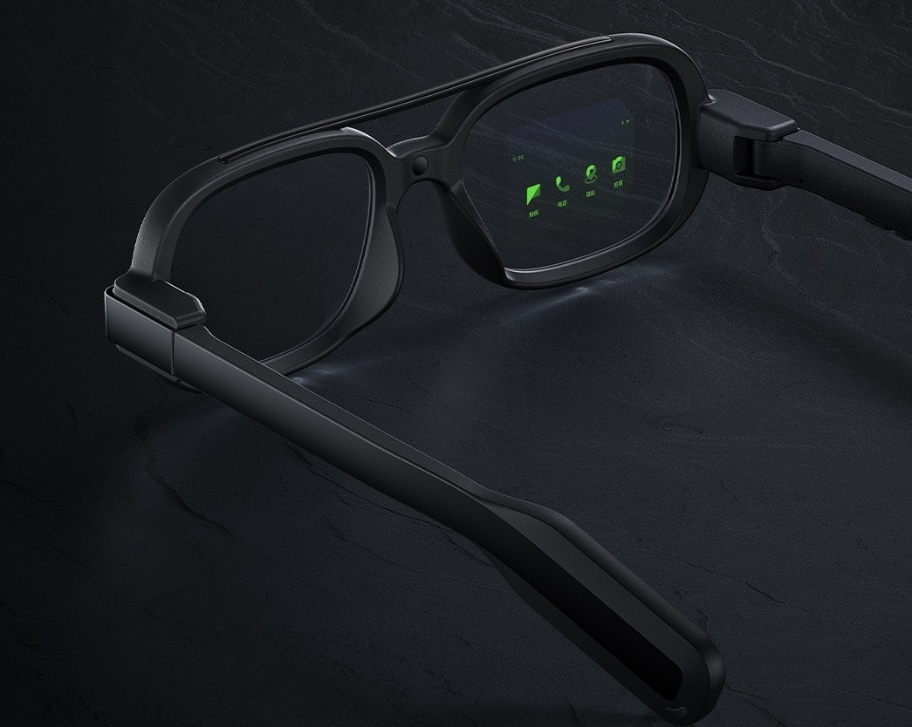
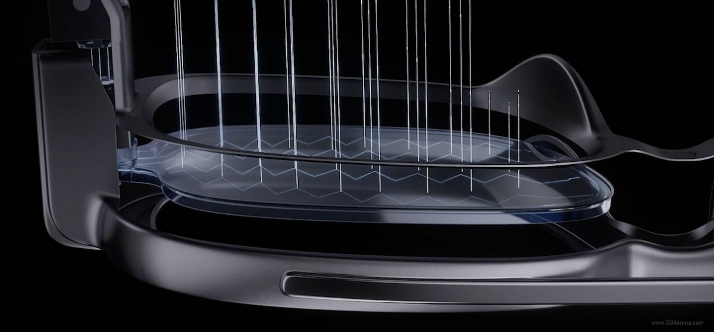
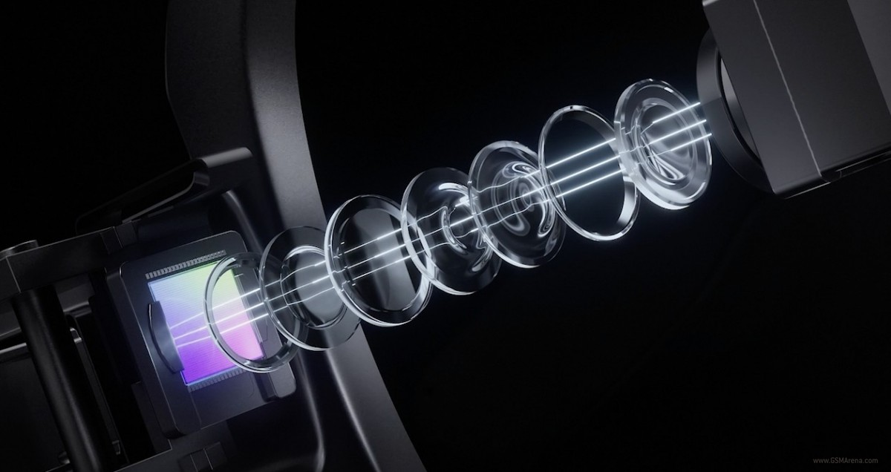
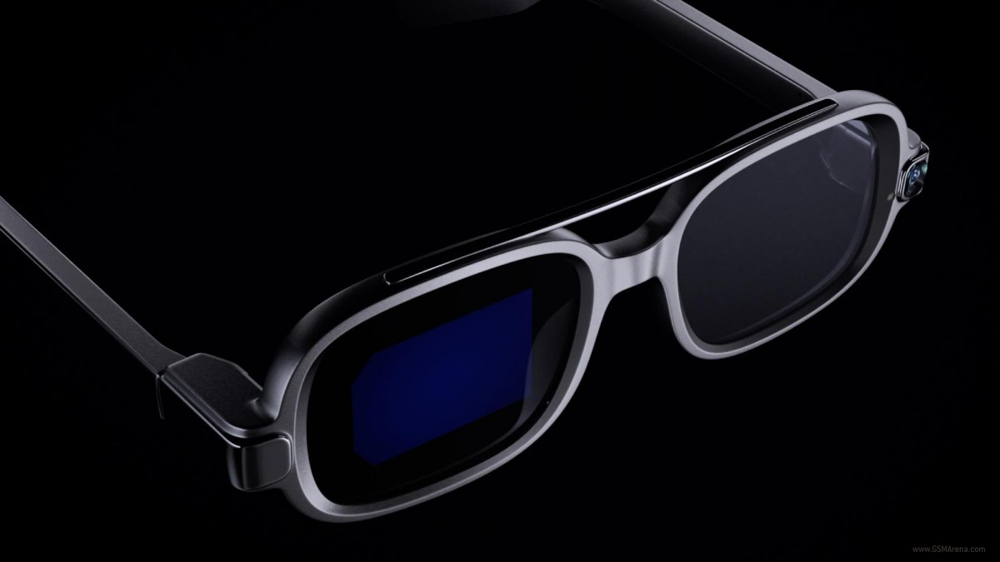

Xiaomi VisionX
Imagine every smartphone function integrated into what you wear. Blinkers introduces its brand new smart glasses " Xiaomi Visionx". It comes with almost every essential feature of your smartphone. From calling to navigating all are integrated in a pair of glasses.
Lens & Display
Through reflection and diffusion of the optical waveguide lens a much larger screen is offered to the eye. View notification of calls and text-messages , HUD Navigation and take Photos.


We use optical wavelength technology for lens display capabilties. At its core is 0.13-inch Micro LED display , smaller than a grain of rice.
Future is here
It was said, any sufficiently advanced techonology is indistuinguishable from magic . Xiaomi VisionX uses an engineering mindeset to create a future view port.
